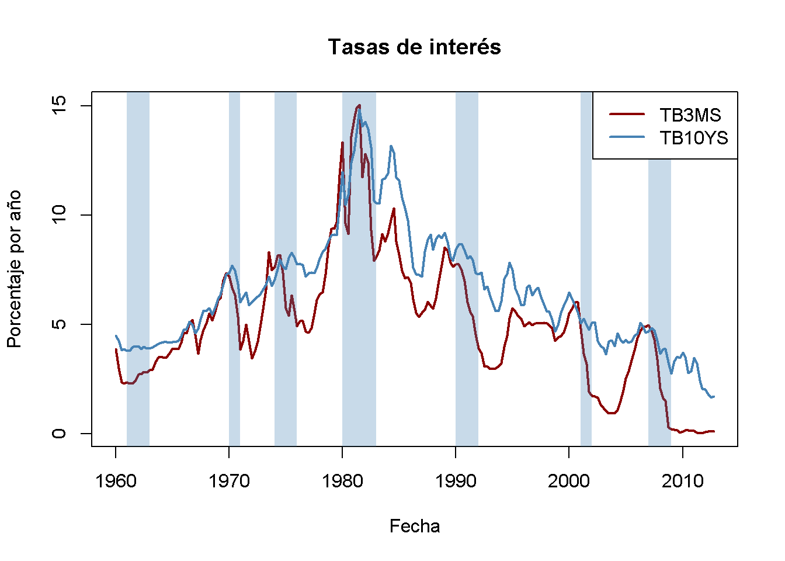
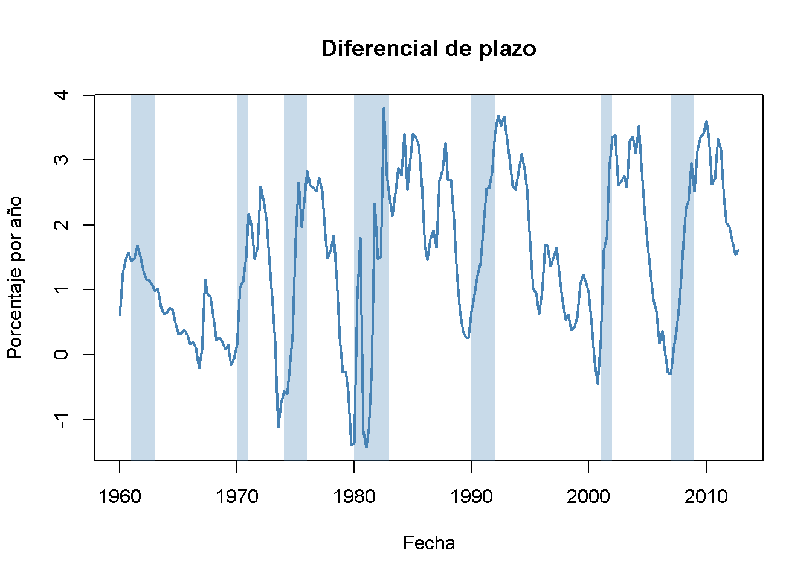
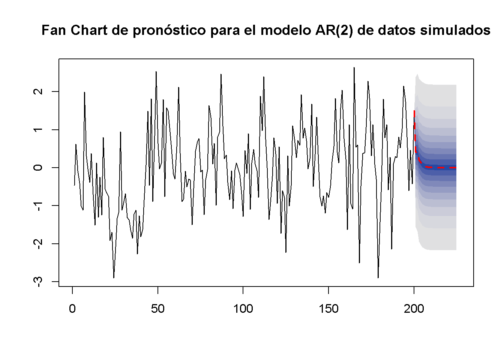

15.5 Predictores adicionales y el modelo ADL
En lugar de utilizar únicamente los rezagos de la variable dependiente como predictores, un modelo de retraso distribuido autorregresivo (ADL) también utiliza rezagos de otras variables para el pronóstico. El modelo general de ADL se resume en el Concepto clave 14.4:
Concepto clave 14.4
El modelo de retardo distribuido autorregresivo
Un modelo ADL(\(p\), \(q\)) asume que una serie de tiempo \(Y_t\) puede ser representada por una función lineal de \(p\) de sus valores rezagados y \(q\) rezagos de otra serie de tiempo \(X_t\):
\[\begin{align*} Y_t =& \, \beta_0 + \beta_1 Y_{t-1} + \beta_2 Y_{t-2} + \dots + \beta_p Y_{t-p} \\ &+ \, \delta_1 X_{t-1} + \delta_2 X_{t-2} + \dots + \delta_q X_{t-q} X_{t-q} + u_t. \end{align*}\]
es un modelo de retraso distribuido autorregresivo con \(p\) retrasos de \(Y_t\) y \(q\) retrasos de \(X_t\) donde \[E(u_t\vert Y_{t-1}, Y_{t-2}, \dots, X_{t-1}, X_{t-2}, \dots)=0.\]
Pronóstico del crecimiento del PIB mediante el diferencial de plazos
Los tipos de interés de los bonos del tesoro a corto y largo plazo están estrechamente vinculados a las condiciones macroeconómicas. Si bien las tasas de interés de ambos tipos de bonos tienen las mismas tendencias a largo plazo, se comportan de manera bastante diferente a corto plazo.
La diferencia en las tasas de interés de dos bonos con vencimiento distinto se denomina margen de plazo.
Los siguientes fragmentos de código muestran las tasas de interés de los bonos del Tesoro de EE. UU. a 10 años y las letras del Tesoro de EE. UU. a 3 meses de 1960 a 2012.
# tasa de interés de las letras del Tesoro a 3 meses
TB3MS <- xts(USMacroSWQ$TB3MS, USMacroSWQ$Date)["1960::2012"]
# tasa de interés de los bonos del Tesoro a 10 años
TB10YS <- xts(USMacroSWQ$GS10, USMacroSWQ$Date)["1960::2012"]
# diferencial de plazo
TSpread <- TB10YS - TB3MS# gráfico (a)
plot(merge(as.zoo(TB3MS), as.zoo(TB10YS)),
plot.type = "single",
col = c("darkred", "steelblue"),
lwd = 2,
xlab = "Fecha",
ylab = "Porcentaje por año",
main = "Tasas de interés")
# definir la función que transforma años en la clase 'yearqtr'
YToYQTR <- function(years) {
return(
sort(as.yearqtr(sapply(years, paste, c("Q1", "Q2", "Q3", "Q4"))))
)
}
# recesiones
recessions <- YToYQTR(c(1961:1962, 1970, 1974:1975, 1980:1982, 1990:1991, 2001, 2007:2008))
# agregar sombreado de color para recesiones
xblocks(time(as.zoo(TB3MS)),
c(time(TB3MS) %in% recessions),
col = alpha("steelblue", alpha = 0.3))
# agrega una leyenda
legend("topright",
legend = c("TB3MS", "TB10YS"),
col = c("darkred", "steelblue"),
lwd = c(2, 2))
# gráfico (b)
plot(as.zoo(TSpread),
col = "steelblue",
lwd = 2,
xlab = "Fecha",
ylab = "Porcentaje por año",
main = "Diferencial de plazo")
# agregar sombreado de color para recesiones
xblocks(time(as.zoo(TB3MS)),
c(time(TB3MS) %in% recessions),
col = alpha("steelblue", alpha = 0.3))
Antes de las recesiones, la brecha entre las tasas de interés de los bonos a largo plazo y las letras a corto plazo se reduce y, en consecuencia, el diferencial de plazo se reduce drásticamente hacia cero o incluso se vuelve negativo en tiempos de tensión económica. Esta información podría utilizarse para mejorar las previsiones de crecimiento del PIB en el futuro.
Se verifica esto estimando un modelo ADL(\(2\), \(1\)) y un modelo ADL(\(2\), \(2\)) de la tasa de crecimiento del PIB utilizando rezagos del crecimiento del PIB y rezagos del diferencial de plazo como regresores. Luego se usan ambos modelos para pronosticar el crecimiento del PIB en 2013:Q1.
# convertir series de crecimiento y plazo en objetos ts
GDPGrowth_ts <- ts(GDPGrowth,
start = c(1960, 1),
end = c(2013, 4),
frequency = 4)
TSpread_ts <- ts(TSpread,
start = c(1960, 1),
end = c(2012, 4),
frequency = 4)
# unir ambos objetos ts
ADLdata <- ts.union(GDPGrowth_ts, TSpread_ts)# estimar el modelo ADL(2,1) de crecimiento del PIB
GDPGR_ADL21 <- dynlm(GDPGrowth_ts ~ L(GDPGrowth_ts) + L(GDPGrowth_ts, 2) + L(TSpread_ts),
start = c(1962, 1), end = c(2012, 4))
coeftest(GDPGR_ADL21, vcov. = sandwich)
#>
#> t test of coefficients:
#>
#> Estimate Std. Error t value Pr(>|t|)
#> (Intercept) 0.954990 0.486976 1.9611 0.051260 .
#> L(GDPGrowth_ts) 0.267729 0.082562 3.2428 0.001387 **
#> L(GDPGrowth_ts, 2) 0.192370 0.077683 2.4763 0.014104 *
#> L(TSpread_ts) 0.444047 0.182637 2.4313 0.015925 *
#> ---
#> Signif. codes: 0 '***' 0.001 '**' 0.01 '*' 0.05 '.' 0.1 ' ' 1La ecuación estimada del modelo ADL(\(2\), \(1\)) es:
\[\begin{align} \widehat{GDPGR}_t = \underset{(0.49)}{0.96} + \underset{(0.08)}{0.26} GDPGR_{t-1} + \underset{(0.08)}{0.19} GDPGR_{t-2} + \underset{(0.18)}{0.44} TSpread_{t-1} \tag{15.4} \end{align}\]
Todos los coeficientes son significativos al nivel de \(5\%\).
# 2012:Q3 / 2012:Q4 datos sobre el crecimiento del PIB y el diferencial de plazo
subset <- window(ADLdata, c(2012, 3), c(2012, 4))
# ADL(2,1) previsión de crecimiento del PIB para 2013:Q1
ADL21_forecast <- coef(GDPGR_ADL21) %*% c(1, subset[2, 1], subset[1, 1], subset[2, 2])
ADL21_forecast
#> [,1]
#> [1,] 2.241689
# calcular el error de pronóstico
window(GDPGrowth_ts, c(2013, 1), c(2013, 1)) - ADL21_forecast
#> Qtr1
#> 2013 -1.102487El modelo (15.4) predice el crecimiento del PIB en 2013:Q1 será de \(2.24\%\), lo que genera un error de pronóstico de \(-1.10\%\).
Se estima la especificación de ADL(\(2\), \(2\)) para ver si agregar información adicional sobre el diferencial de plazos anteriores mejora el pronóstico.
# estimar el modelo ADL(2,2) de crecimiento del PIB
GDPGR_ADL22 <- dynlm(GDPGrowth_ts ~ L(GDPGrowth_ts) + L(GDPGrowth_ts, 2)
+ L(TSpread_ts) + L(TSpread_ts, 2),
start = c(1962, 1), end = c(2012, 4))
coeftest(GDPGR_ADL22, vcov. = sandwich)
#>
#> t test of coefficients:
#>
#> Estimate Std. Error t value Pr(>|t|)
#> (Intercept) 0.967967 0.472470 2.0487 0.041800 *
#> L(GDPGrowth_ts) 0.243175 0.077836 3.1242 0.002049 **
#> L(GDPGrowth_ts, 2) 0.177070 0.077027 2.2988 0.022555 *
#> L(TSpread_ts) -0.139554 0.422162 -0.3306 0.741317
#> L(TSpread_ts, 2) 0.656347 0.429802 1.5271 0.128326
#> ---
#> Signif. codes: 0 '***' 0.001 '**' 0.01 '*' 0.05 '.' 0.1 ' ' 1Se obtiene
\[\begin{align} \begin{split} \widehat{GDPGR}_t =& \underset{(0.47)}{0.98} + \underset{(0.08)}{0.24} GDPGR_{t-1} \\ & + \underset{(0.08)}{0.18} GDPGR_{t-2} -\underset{(0.42)}{0.14} TSpread_{t-1} + \underset{(0.43)}{0.66} TSpread_{t-2}. \end{split} \tag{15.5} \end{align}\]
Los coeficientes en ambos rezagos del diferencial de plazo no son significativos al nivel de \(10\%\).
# pronóstico de crecimiento del PIB ADL(2,2) para 2013:Q1
ADL22_forecast <- coef(GDPGR_ADL22) %*% c(1, subset[2, 1], subset[1, 1], subset[2, 2], subset[1, 2])
ADL22_forecast
#> [,1]
#> [1,] 2.274407
# calcular el error de pronóstico
window(GDPGrowth_ts, c(2013, 1), c(2013, 1)) - ADL22_forecast
#> Qtr1
#> 2013 -1.135206El pronóstico de ADL(\(2\), \(2\)) de crecimiento del PIB en 2013:Q1 es \(2.27\%\), lo que implica un error de pronóstico de \(1.14\%\).
¿Los modelos ADL (15.4) y (15.5) mejoran el modelo AR(\(2\)) simple (15.3)? La respuesta es sí. No obstante, \(SER\) y \(\bar{R}^2\) solo mejoran ligeramente, una prueba \(F\) sobre los coeficientes de diferenciación de términos en (15.5) proporciona evidencia de que el modelo funciona mejor al explicar el crecimiento del PIB que el modelo AR(\(2\)), ya que la hipótesis de que ambos coeficientes son cero no puede rechazarse al nivel de \(5\%\).
# comparar R2 ajustada
c("Adj.R2 AR(2)" = summary(GDPGR_AR2)$r.squared,
"Adj.R2 ADL(2,1)" = summary(GDPGR_ADL21)$r.squared,
"Adj.R2 ADL(2,2)" = summary(GDPGR_ADL22)$r.squared)
#> Adj.R2 AR(2) Adj.R2 ADL(2,1) Adj.R2 ADL(2,2)
#> 0.1425484 0.1743996 0.1855245
# comparar SER
c("SER AR(2)" = summary(GDPGR_AR2)$sigma,
"SER ADL(2,1)" = summary(GDPGR_ADL21)$sigma,
"SER ADL(2,2)" = summary(GDPGR_ADL22)$sigma)
#> SER AR(2) SER ADL(2,1) SER ADL(2,2)
#> 3.132122 3.070760 3.057655
# prueba F sobre coeficientes de diferencias de plazos
linearHypothesis(GDPGR_ADL22,
c("L(TSpread_ts)=0", "L(TSpread_ts, 2)=0"),
vcov. = sandwich)
#> Linear hypothesis test
#>
#> Hypothesis:
#> L(TSpread_ts) = 0
#> L(TSpread_ts, 2) = 0
#>
#> Model 1: restricted model
#> Model 2: GDPGrowth_ts ~ L(GDPGrowth_ts) + L(GDPGrowth_ts, 2) + L(TSpread_ts) +
#> L(TSpread_ts, 2)
#>
#> Note: Coefficient covariance matrix supplied.
#>
#> Res.Df Df F Pr(>F)
#> 1 201
#> 2 199 2 4.4344 0.01306 *
#> ---
#> Signif. codes: 0 '***' 0.001 '**' 0.01 '*' 0.05 '.' 0.1 ' ' 1Estacionariedad
En general, los pronósticos se pueden mejorar mediante el uso de múltiples predictores, al igual que en la regresión transversal. Al construir modelos de series de tiempo, se debe tener en cuenta si las variables son estacionarias o no estacionarias. El Concepto clave 14.5 explica qué es la estacionariedad.
Concepto clave 14.5
Estacionariedad
Una serie de tiempo \(Y_t\) es estacionaria si su distribución de probabilidad es independiente del tiempo; es decir, la distribución conjunta de \(Y_{s+1}, Y_{s+2},\dots,Y_{s+T}\) no cambia a medida que varía \(s\), independientemente de \(T\).
De manera similar, dos series de tiempo \(X_t\) y \(Y_t\) son conjuntamente estacionarias si la distribución conjunta de \((X_{s+1},Y_{s+1}, X_{s+2},Y_{s+2} \dots, X_{s+T},Y_{s+T})\) no depende de \(s\), independientemente de \(T\).
En un sentido probabilístico, estacionariedad significa que la información sobre cómo evoluciona una serie de tiempo en el futuro es inherente a su pasado. Si este no es el caso, no se puede usar el pasado de una serie como una guía confiable para su futuro.
La estacionariedad facilita el aprendizaje de las características de los datos pasados.
Regresión de series temporales con varios predictores
El concepto de estacionariedad es un supuesto clave en el modelo de regresión de series de tiempo general con múltiples predictores. El Concepto clave 14.6 establece este modelo y sus supuestos.
Concepto clave 14.6
Regresión de series de tiempo con múltiples predictores
El modelo general de regresión de series de tiempo amplía el modelo ADL de manera que se incluyen múltiples regresores y sus rezagos. Utiliza \(p\) retrasos de la variable dependiente y \(q_l\) retrasos de \(l\) predictores adicionales donde \(l=1,\dots,k\):
\[\begin{equation} \begin{aligned} Y_t =& \beta_0 + \beta_1 Y_{t-1} + \beta_2 Y_{t-2} + \dots + \beta_{p} Y_{t-p} \\ &+ \delta_{11} X_{1,t-1} + \delta_{12} X_{1,t-2} + \dots + \delta_{1q} X_{1,t-q} \\ &+ \dots \\ &+ \delta_{k1} X_{k,t-1} + \delta_{k2} X_{k,t-2} + \dots + \delta_{kq} X_{k,t-q} \\ &+ u_t \end{aligned} \end{equation}\]
Para la estimación se hacen las siguientes suposiciones:
El término de error \(u_t\) tiene una media condicional cero dados todos los regresores y sus retrasos: \[E(u_t\vert Y_{t-1}, Y_{t-2}, \dots, X_{1,t-1}, X_{1,t-2} \dots, X_{k,t-1}, X_{k,t-2}, \dots)\] Esta suposición es una extensión de la suposición de cero media condicional utilizada para los modelos AR y ADL. En este sentido, garantiza que el modelo de regresión de series de tiempo general indicado anteriormente da el mejor pronóstico de \(Y_t\) dados sus rezagos, los regresores adicionales \(X_{1,t},\dots,X_{k,t}\) y sus rezagos.
La suposición de i.i.d. para los datos transversales no es (completamente) significativa para los datos de series de tiempo. Se reemplaza por el siguiente supuesto que consta de dos partes:
Los \((Y_{t}, X_{1,t}, \dots, X_{k,t})\) tienen una distribución estacionaria (la parte “idénticamente distribuida” del supuesto i.i.d. para datos transversales). Si esto no se cumple, los pronósticos pueden estar sesgados y la inferencia puede ser muy engañosa.
\((Y_{t}, X_{1,t}, \dots, X_{k,t})\) y \((Y_{t-j}, X_{1,t-j}, \dots, X_{k,t-j})\) se vuelven independientes a medida que \(j\) crece (la parte distribuida de forma “independiente” del supuesto i.i.d para datos transversales). Esta suposición también se llama dependencia débil. Garantiza que WLLN y CLT se mantengan en muestras grandes.
Es poco probable que existan valores atípicos grandes: \(E(X_{1,t}^4), E(X_{2,t}^4), \dots, E(X_{k,t}^4)\) y \(E(Y_t^4)\) tienen cuartos momentos finitos distintos de cero.
Sin multicolinealidad perfecta.
Dado que muchas series de tiempo económicas parecen no ser estacionarias, el supuesto dos del Concepto clave 14.6 es crucial en macroeconomía y finanzas aplicadas, razón por la cual se han desarrollado pruebas estadísticas de estacionariedad o no estacionariedad. Los capítulos 15.6 y 15.7 están dedicados a este tema.
Inferencia estadística y prueba de causalidad de Granger
Si un \(X\) es un predictor útil para \(Y\), en una regresión de \(Y_t\) con rezagos propios y rezagos de \(X_t\), no todos los coeficientes de los rezagos en \(X_t\) son cero. Este concepto se llama causalidad de Granger y es una hipótesis interesante para probar. El Concepto clave 14.7 resume la idea.
Concepto clave 14.7
Pruebas de causalidad de Granger
La prueba de causalidad de Granger Granger (1969) es una prueba \(F\) de la hipótesis nula de que todos los rezagos de una variable \(X\) incluida en un modelo de regresión de series de tiempo no tienen poder predictivo para \(Y_t\). La prueba de causalidad de Granger no prueba si \(X\) realmente causa \(Y\), sino si los retrasos incluidos son informativos en términos de predicción de \(Y\).
Ya se ha realizado una prueba de causalidad de Granger sobre los coeficientes de diferencial de plazo en (15.5), el modelo ADL(\(2\), \(2\)) de crecimiento del PIB y se concluye que al menos uno de los dos primeros rezagos del diferencial de plazo tiene poder predictivo para el crecimiento del PIB.
Incertidumbre de pronóstico e intervalos de pronóstico
En general, es una buena práctica informar una medida de la incertidumbre al presentar los resultados que se ven afectados por este último. La incertidumbre es particularmente interesante cuando se pronostica una serie de tiempo. Por ejemplo, considere un modelo ADL\((1,1)\) simple
\[\begin{align*} Y_t = \beta_0 + \beta_1 Y_{t-1} + \delta_1 X_{t-1} + u_t \end{align*}\]
donde \(u_t\) es un término de error homocedástico. El error de previsión es
\[\begin{align*} Y_{T+1} - \widehat{Y}_{T+1\vert T} = u_{T+1} - \left[(\widehat{\beta}_0 - \beta_0) + (\widehat{\beta}_1 - \beta_1) Y_T + (\widehat{\delta_1} - \delta_1) X_T \right]. \end{align*}\]
El error de pronóstico cuadrático medio (EPCM) y el RMFSE son
\[\begin{align*} MFSE =& \, E\left[(Y_{T+1} - \widehat{Y}_{T+1\vert T})^2 \right] \\ =& \, \sigma_u^2 + Var\left[ (\widehat{\beta}_0 - \beta_0) + (\widehat{\beta}_1 - \beta_1) Y_T + (\widehat{\delta_1} - \delta_1) X_T \right], \\ RMFSE =& \, \sqrt{\sigma_u^2 + Var\left[ (\widehat{\beta}_0 - \beta_0) + (\widehat{\beta}_1 - \beta_1) Y_T + (\widehat{\delta_1} - \delta_1) X_T \right]}. \end{align*}\]
Un intervalo de pronóstico de \(95\%\) es un intervalo que cubre el valor real de \(Y_{T+1}\) en \(95\%\) de aplicaciones repetidas. Existe una gran diferencia en el cálculo de un intervalo de confianza y un intervalo de pronóstico: Al calcular un intervalo de confianza de una estimación puntual, se utilizan grandes aproximaciones de muestra que están justificadas por el TLC y, por lo tanto, son válidas para una amplia gama de distribuciones de términos de error. Sin embargo, para calcular un intervalo de pronóstico de \(Y_{T+1}\), se debe hacer una suposición adicional sobre la distribución de \(u_{T+1}\), el término de error en el período \(T+1\). Suponiendo que \(u_{T+1}\) se distribuye normalmente, se puede construir un intervalo de pronóstico de \(95\%\) para \(Y_{T+1}\) usando \(SE(Y_{T+1} - \widehat{Y}_{T+1\vert T})\), una estimación del EPRCM:
\[\begin{align*} \widehat{Y}_{T+1\vert T} \pm 1.96 \cdot SE(Y_{T+1} - \widehat{Y}_{T+1\vert T}) \end{align*}\]
Por supuesto, el cálculo se vuelve más complicado cuando el término de error es heterocedástico o si se está interesado en calcular un intervalo de pronóstico para \(T+s, s>1\).
En algunas aplicaciones, es útil informar múltiples intervalos de pronóstico para períodos posteriores. Estos se pueden visualizar en un llamado diagrama de abanico. No se replicará el diagrama de abanico porque el modelo subyacente es mucho más complejo que los modelos AR y ADL simples que se tratan aquí. En su lugar, en el siguiente ejemplo se usan datos de series de tiempo simuladas y se estima un modelo AR (\(2\)) que luego se utiliza para pronosticar los subsiguientes \(25\) resultados futuros de la serie.
# sembrar semilla
set.seed(1234)
# simular la serie temporal
Y <- arima.sim(list(order = c(2, 0, 0), ar = c(0.2, 0.2)), n = 200)
# estimar un modelo AR(2) usando 'arima()', ver `?arima`
model <- arima(Y, order = c(2, 0, 0))
# calcular pronósticos de puntos e intervalos de predicción para los próximos 25 períodos
fc <- forecast(model, h = 25, level = seq(5, 99, 10))
# graficar un diagrama de abanico
plot(fc,
main = "Fan Chart de pronóstico para el modelo AR(2) de datos simulados",
showgap = F,
fcol = "red",
flty = 2)
arima.sim() simula modelos de media móvil integrada autorregresiva (ARIMA). Los modelos AR pertenecen a esta clase de modelos. Se usa list(order = c(2, 0, 0), ar = c(0.2, 0.2)), por lo que el DGP (Data Generating Process) es \[Y_t = 0.2 Y_{t-1} + 0.2 Y_{t-2} + u_t.\]
Se elige level = seq(5, 99, 10) en la llamada de forecast(), de modo que se calculen los intervalos de pronóstico con niveles \(5\%, 15\%, \dots, 95\%\) para cada pronóstico puntual de la serie.
La línea roja discontinua muestra los pronósticos puntuales de la serie para los próximos 25 períodos basados en un modelo \(ADL(1,1)\) y las áreas sombreadas representan los intervalos de predicción. El grado de sombreado indica el nivel del intervalo de predicción. La más oscura de las bandas azules muestra los intervalos de pronóstico de \(5\%\) y el color se desvanece hacia el gris a medida que aumenta el nivel de los intervalos.